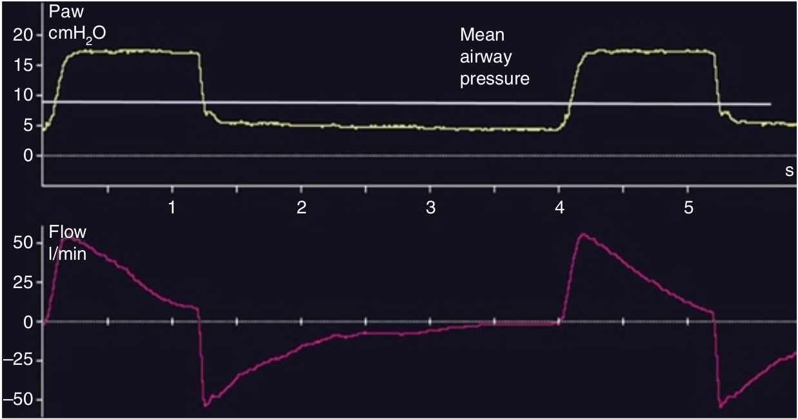

مانند کنترل حجمی، فشار متوسط راه هوائی برابر است با سطح زیر منحنی فشار - زمان تقسیم بر زمان یک سیکل کامل تنفسی (دم و بازدم). فشار متوسط راه هوائی به PEEP، PINSP، و نسبت I:E بستگی دارد. همانند کنترل حجمی، در کنترل فشاری نیز فشار راه هوائی با اسیژناسیون ارتباط مستقیم و با اختلال همودینامیک (افت برون ده قلب) ارتباط معکوس دارد.

هنگامیکی فشار متوسط راه هوائی افزایش می یابد کدام رویداد زیر رخ میدهد؟
۱ - برون ده قلب ممکن است کاهش یابد
۲ - دفع CO2 ممکن است افزایش یابد
۳ - اکسیژناسیون معمولا بهبود می یابد
۴ - فشار پلورال افزایش می یابد
۵ - تمام موارد فوق